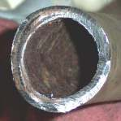

An exhaust leak is hot gas escaping before it reaches the silencer. You hear a sharp tick or puff that follows engine speed, often loudest when the engine is cold and quieter as the metal expands. Look for black soot streaks or a grey crust at a joint. The usual place is the gasket between the pipe and the cylinder head, then the joint between the header pipe and the silencer. On fuel-injected bikes the oxygen sensor sits in the header pipe (on the K-Light the catalytic converter is in the header too), so a leak near it can let air in and make the engine run badly or set a fault code.
Is it safe to ride?
Yes with care. Fix it soon: the leak gets bigger, can burn your leg or wiring, and a leak at the head can damage the head face.
Quick checks first
- Look for soot streaks at the head joint and the silencer clamp.
- Are the two nuts at the head both present and tight (engine cold)?
- Is the silencer loose on its mount?
- Is the engine warning light on?
- Rust through in one place usually means rust in many. Chrome can hide the holes.
Diagnose it step by step
1Is the sound a tick that follows engine speed and is loudest cold?
- Yes: go to step 2.
- No, it is a rattle when the engine shakes: go to Rattling from the exhaust or heat shield.
2Engine cold, start it outside and hold a paper strip near each joint, not touching. Does it flutter at a joint?
- Yes, at the head: go to step 3.
- Yes, at the silencer joint or a seam: go to step 4.
- No flutter: listen with a long screwdriver on the valve caps. A tick there is valve clearance: Ticking noise from the top of the engine.
3Engine cold: are the head nuts loose?
- Yes: tighten evenly to the manual value with Find and fix an exhaust leak and retest.
- No: the gasket is crushed or burnt. Replace it with the same repair. If a stud is broken, the head needs a workshop.
4Is the silencer clamp or mount loose, or is there a rust hole or cracked weld?
- Loose: tighten with Check exhaust mounts and heat shields.
- Hole or crack: the pipe needs welding or replacing. Never patch a catalytic converter.
5Fuel-injected: after the repair, is the warning light still on? Read codes with Read engine fault codes (fuel injection).
- Oxygen sensor code: clear the code, ride, and recheck. If it returns, go to Check the oxygen sensor.
- No code: done.
What happens if you ignore it: the gasket burns away, the leak grows, the head face can erode, and on carburettor bikes air drawn in on the overrun causes popping.
Causes, most likely first
| Cause | How to confirm | Fix |
|---|---|---|
| Loose head nuts | Nut turns, cold | Find and fix an exhaust leak |
| Crushed or burnt port gasket | Soot at head, nuts tight | Find and fix an exhaust leak |
| Loose silencer joint | Soot at clamp | Check exhaust mounts and heat shields |
| Rust hole or cracked weld | Visible hole | Weld or replace the pipe |
Reference values (K-Light 125)
| Item | Value | PDF page |
|---|---|---|
| Muffler connector (header flange) bolt | 5 to 9 N·m | 106 |
| Muffler mounting bolt | 22 to 29 N·m | 106 |